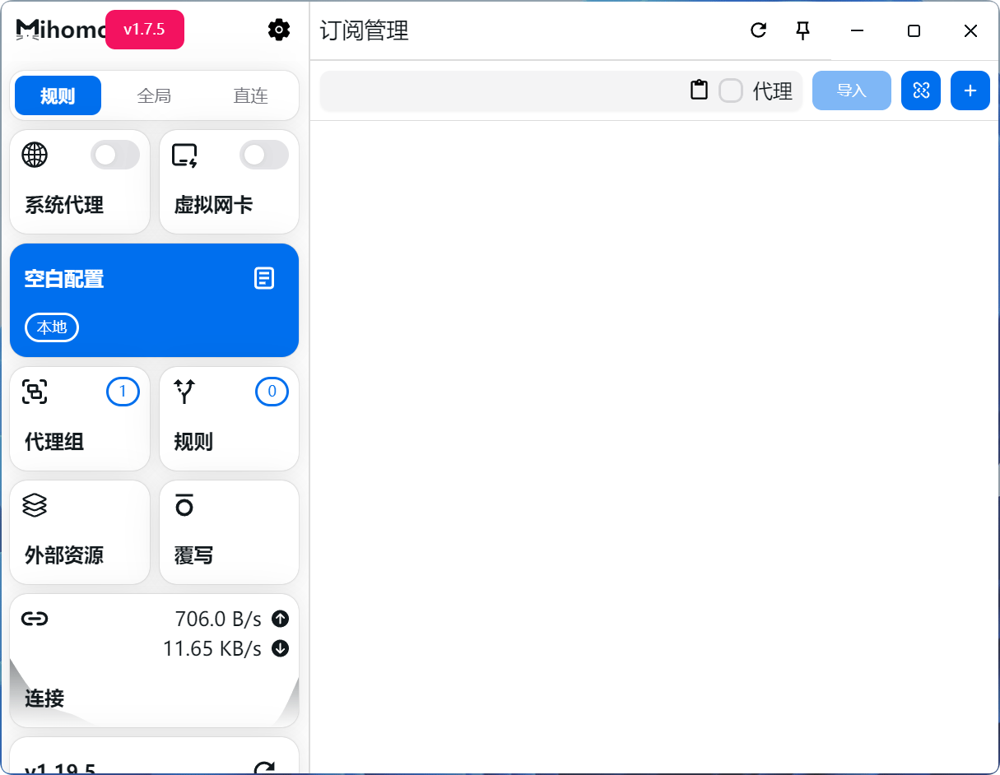

🕓2025年6月12日
Mihomo Party 视频使用教程：▶
Mihomo Party 配置覆写教程：▶
Mihomo Party 是基于 Mihomo 内核的图形界面客户端，适合希望快速上手的用户。
提供适用于 Windows、macOS、Linux 的安装包和便携版。
🖥️ Mihomo Party 客户端 下载地址>>

配置覆写
覆写功能用于对订阅配置进行自定义修改，使用覆写功能修改订阅配置可以使得修改在更新订阅后依然生效。
Mihomo Party 配置文件下载>>
Mihomo Party 备用下载地址>>
# 直接覆盖整个规则
复制 rules: - DOMAIN,baidu.com,DIRECT
# 将规则插入到原规则前面
复制 +rules: - DOMAIN,baidu.com,DIRECT
# 在原规则后面追加规则
复制 rules+: - DOMAIN,baidu.com,DIRECT
规则和策略组/代理组：
分流规则类型：
DOMAIN #完整域名匹配，例如：
复制 DOMAIN,www.google.com,🚀 节点选择
DOMAIN-SUFFIX #域名后缀匹配，
例如：
复制 DOMAIN-SUFFIX,google.com,🚀 节点选择
DOMAIN-KEYWORD #域名关键字匹配 ，例如：
复制 DOMAIN-KEYWORD,google,🚀 节点选择
策略组/代理组/节点组：
DIRECT #直连
REJECT #拒绝
PASS #跳过此规则
select #手动选择节点
url-test #延迟优选，自动选择低延迟节点
fallback #故障转移，自动选择该组节点，从第一个节点开始检查是否可用，直到选择可用节点。
load-balance #负载均衡，能充分利用多个代理的带宽，不健康的代理会被跳过
relay #链式代理，可通过多个节点代理转发到达目的地，例如：A节点>B节点>C节点
敬请关注！下期分享：多个机场、自建节点整合方法